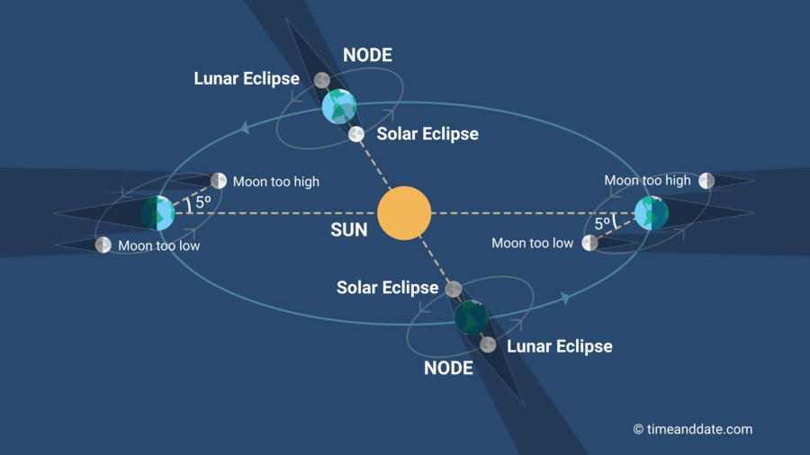
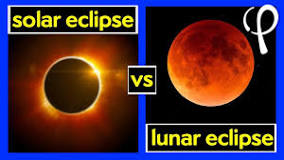

Solar Eclipses occur when the moon passes between the sun and earth, casting the moon's shadow.
A solar eclipse can only happen during a new moon.
Lunar Eclipses occur when the sun casts Earth’s shadow onto the moon.
For this to happen, the Earth must be between the sun and moon with all of them on the same orbit.
This is how different types of eclipses are created.
Why do only some people on Earth see an eclipse at a given time?
Only some people see the eclipse at one time because the moon is much smaller than the Earth and its shadow only covers a small proportion of Earth.
Therefore you can only see the solar eclipse if you are in a certain region.
What causes the Sun, Moon and Earth to align?
The sun, moon and Earth align because the moon orbits the Earth and its orbit is slightly tilted, relative to the plane of Earth’s orbit around the sun.
This is known as the Ecliptic Plane.
The Moon orbits the Earth and they both orbit the Sun so are constantly changing their positions in the sky.
This is what cause them to align and make eclipses.
How often do eclipses occur?

There are two to five eclipses each year, with a full eclipse taking place roughly every 18 months.
Whether you can view it depends on where you are in the world.
Most calendar years have 2 eclipses but the maximum you can have is 5 which is very rare.
According to NASA calculations, only 25 years in the past 5,000 years have had 5 eclipses.
The last time this happened was in 1935 and the next one will be in 2206.
How do scientists know when and where eclipses will occur?
Scientists first work out the geometry and mechanics of how the Earth and the moon orbit the sun under gravitational fields.
From Newton's law of motion, they mathematically work out the motions of these bodies in three-dimensional space taking into account the bodies are of infinite size and not perfect spheres.
They then put their positions into a complex equation and then program a computer to integrate the question to find out when the next eclipse is.
What is the difference between a lunar and solar eclipse?

The first difference between a lunar and a solar eclipse is that a solar eclipse happens at a new moon and a lunar eclipse happens at a full moon.
A second difference is that Solar eclipses are only visible from a narrow strip of land over which the moon's shadow passes and a lunar eclipse is visible from the whole nighttime hemisphere.
A third difference is solar eclipses can only be safely viewed with the naked eye when it is during totality and lunar eclipses can always be viewed safely with the naked eye.
What is an eclipse season and why do they occur approximately every 6 months?
An eclipse season is when from Earth’s perspective the sun is close enough to a lunar node to allow an eclipse to take place.
It lasts 34 days on average and then occurs every 6 months.
Eclipse seasons occur slightly shy of six months apart, the time it takes the sun to travel from one node to the next along the epileptic.
Quick Scratch Activity
How to Play:
Click the green flag when you are ready to begin.
Press the right arrow key to go to the next slide.